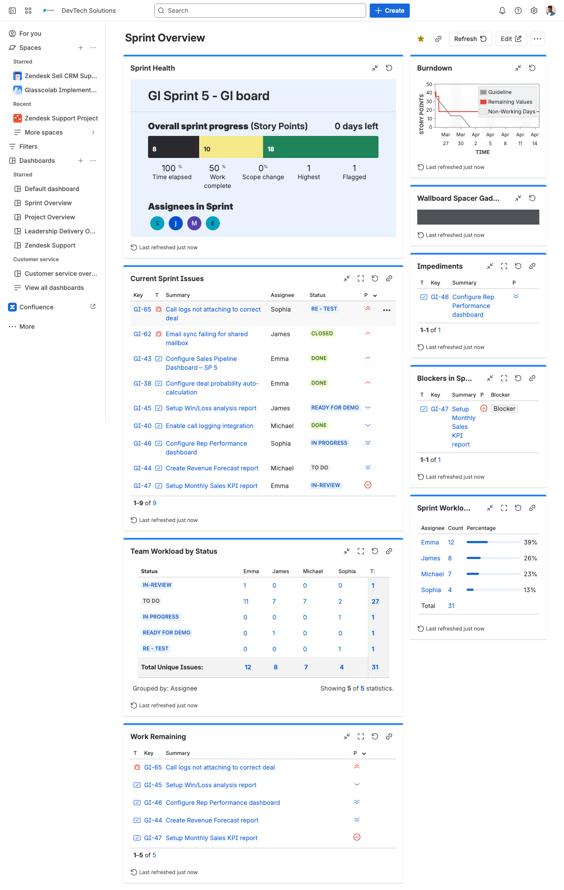
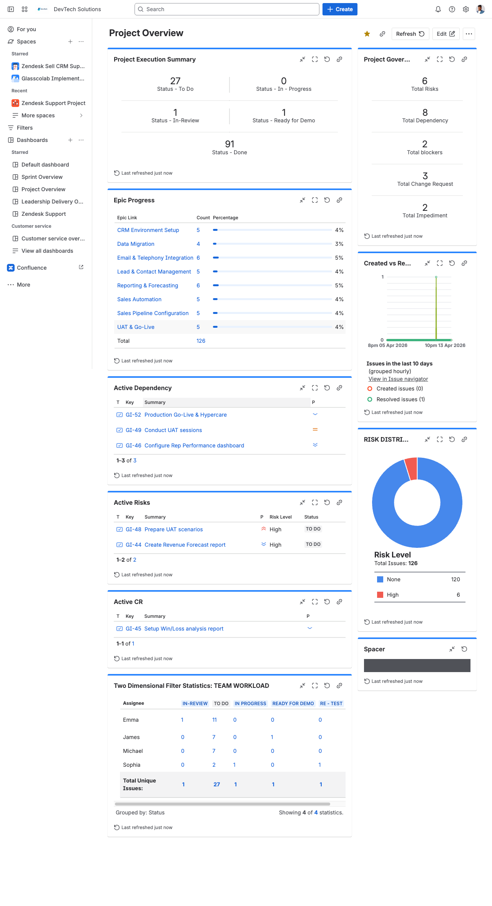
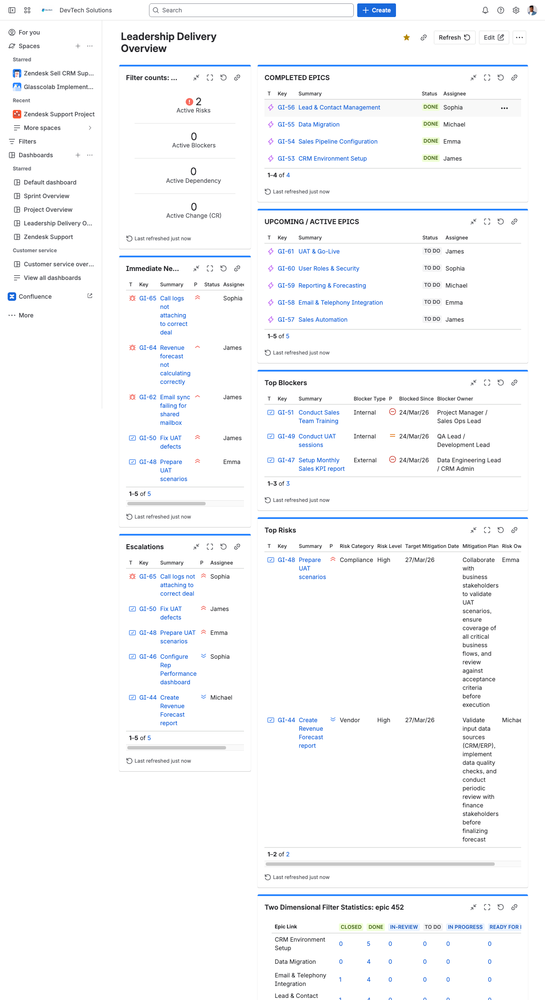
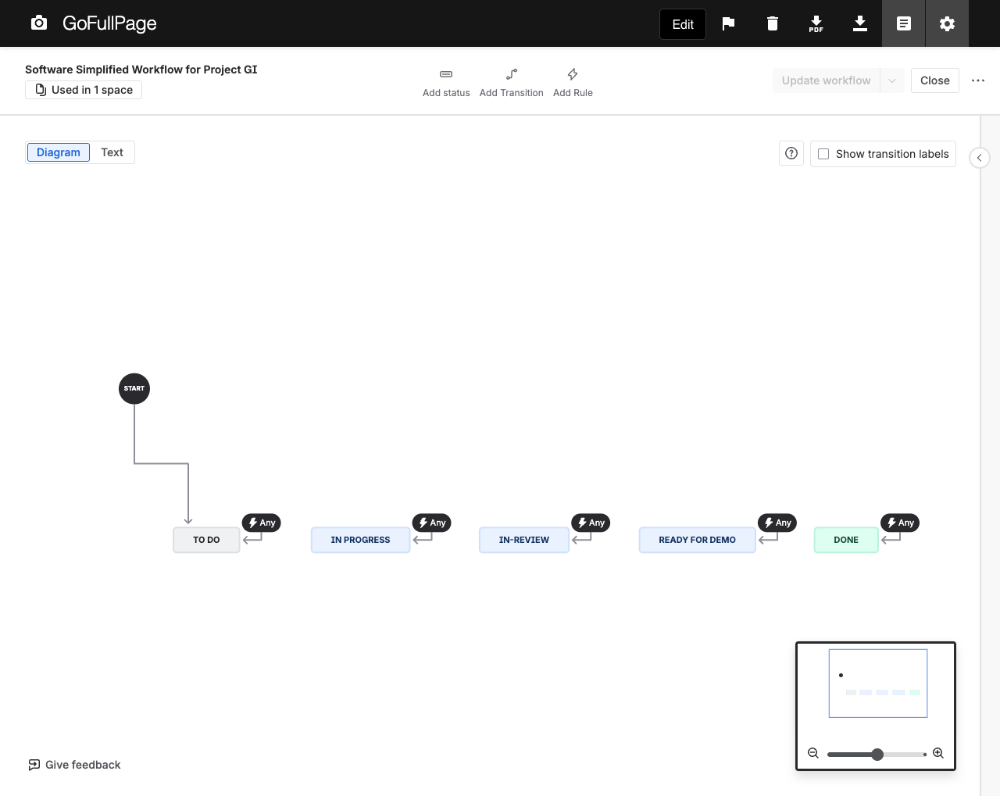
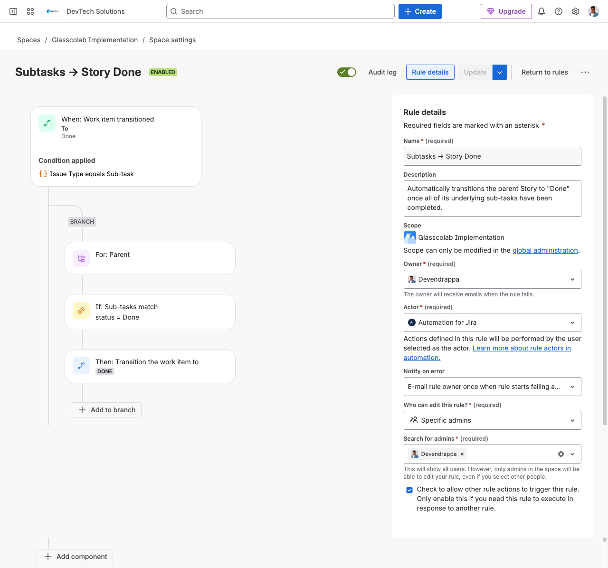
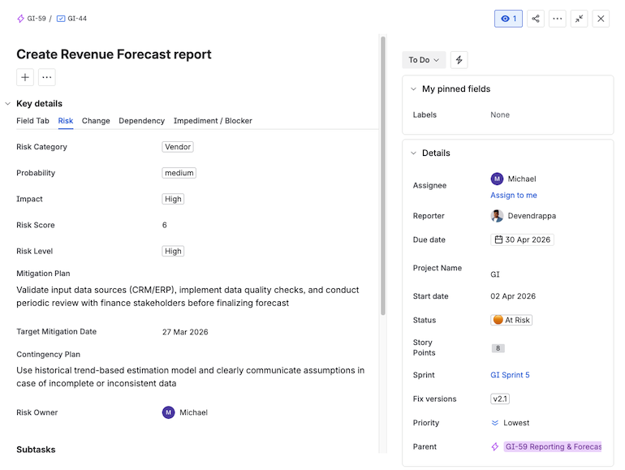
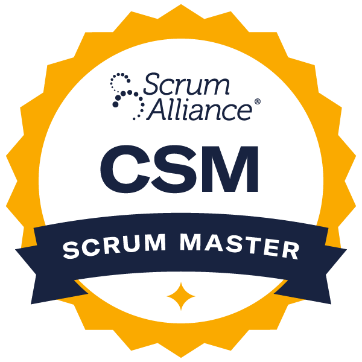
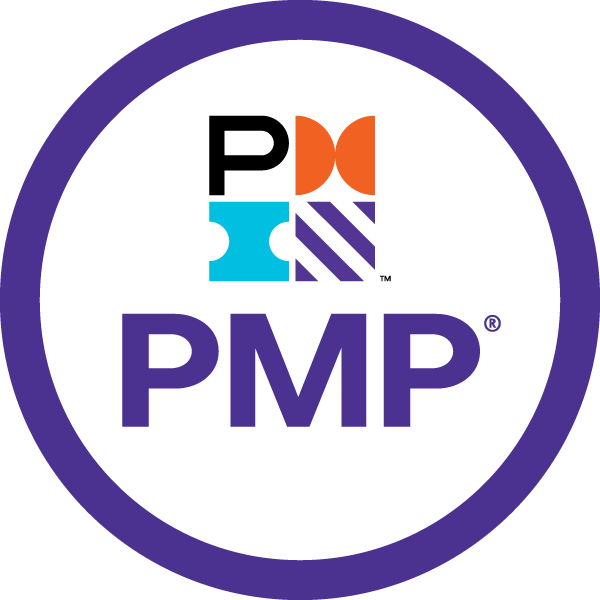

I don't just use Jira; I build it. After a decade of managing Agile projects, I now specialize in the complete technical setup of Jira instances tailored for high-performance IT delivery.
For a decade, I managed complex IT projects as an Agile PM. In every role, I personally architected the Jira environment across all my projects—from custom permission schemes to complex automation rules. While I am new to Upwork, I bring 10,000+ hours of hands-on technical configuration to your project.
End-to-end Jira configuration tailored to your specific business workflow.
Custom workflows, transitions, and automation rules to eliminate manual tasks.
Expert setup of custom fields, schemes, permissions, screens, and issue types.
Leadership dashboards, sprint tracking, and real-time KPI reporting for visibility.
Seamless Jira imports, legacy system migration, and third-party tool integrations.
Identifying bottlenecks to improve delivery efficiency and team velocity.
A structured 11-phase approach for scalable, automated Jira delivery.
| Phase | Phase Name | Activity | Duration | Deliverables |
|---|---|---|---|---|
| 1 | Requirement Discovery | Understand business process; Identify Workflow stages, Issue types, Reporting expectations. | 0.5 hr | Business process documentation; Workflow mapping; Requirement summary. |
| 2 | Jira Design | Define Issue hierarchy, Custom issue types (Risk, Dependency), Workflow design, Permission scheme. | 1 hr | Issue hierarchy model; Workflow diagrams; Field/Screen design; Permission plan. |
| 3 | Configuration | Create project; Configure Issue types, Workflows, Screens, and Fields; Map everything. | 2 hr | Configured Jira project; Workflows implemented; Screens/Fields mapped. |
| 4 | Automation Setup | Implement automation rules to reduce manual effort and enforce process consistency. | 3 hr | Automation rules (transitions, notifications, auto-assignments); Rule documentation. |
| 5 | Integration Setup | Integrate Jira with external tools (if required). | 5 hr | Tool integrations (Git, CI/CD, Slack, Email); Integration validation. |
| 6 | Data Migration | Import external data, clean and map fields correctly, validate migrated data. | 3 hr | Migrated issues; Data mapping document; Validation report. |
| 7 | Boards & Dashboards | Create Scrum/Kanban boards; Create Dashboards (Sprint, Project, Leadership, Support). | 5 hr | Scrum/Kanban boards; Sprint/Project/Leadership/Support dashboards. |
| 8 | Reports & Metrics | Configure Velocity, Burndown, Control Charts; Create JQL filters for Risks/Dependencies. | 2 hr | Metric charts; JQL filter library; Reporting framework. |
| 9 | Governance Setup | Define Risk management process, Dependency tracking, and Change Request flow. | 3 hr | Risk framework; Dependency tracking model; CR workflow; Governance guidelines. |
| 10 | Testing (UAT) | Validate Workflows, Reports, and Dashboards. | 1 hr | UAT test cases; Validation report; Refinements. |
| 11 | Training & Handover | User training session, Admin guide, Recorded walkthrough. | 1 hr | User training sessions; Admin guide; Recorded walkthroughs. |
Cross-functional teams struggling with scope creep and zero visibility into parallel workstreams.
15% Improvement in Velocity.
Real-time health tracking.
Implementation tasks lost in email threads, leading to bottlenecks and missed deadlines.
25% Reduction in Lead Time.
100% transparency in task logging.
Manual ticket logging and zero tracking of Service Level Agreements (SLAs).
90% SLA Compliance.
20% workload reduction via self-service.
Scrum, Kanban, SAFe, Process Optimization
Incident, Change, & SLA Management
Jira Governance, Data Mapping, Access Strategy
Click any image to view full size and zoom in/out

Sprint Dashboard

Project Dashboard

Leadership Dashboard

Workflow

Automation

Custom Fields & Grouping

Scrum Alliance
Google (via Coursera)

Project Management Institute (PMI)
Stop struggling with messy workflows and manual tracking. I combine 10 years of Agile Project Management with deep technical Jira expertise to build systems that scale with your team.